Robotics: Perception study note week 1
Acknowledgement: This course is being offered on Coursera for free to audit.
Gaoxiang: Due to the characteristic of this course, there maybe lots of pictures.
Overview
- Week 1: Geometry of Projection
- Week 2: Augmented Reality & Visual Metrology
- Week 3 & 4: Where am I?
Week 1
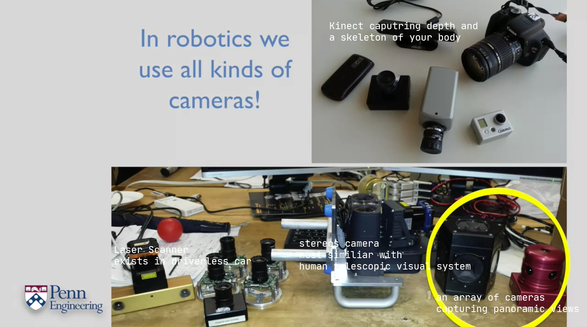
There are panoromic cameras, stereos camera, laser scanner and Kinect.
How does a thin lens work?
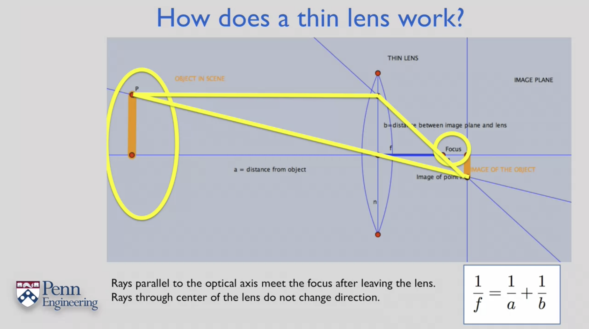
- Rays parallet to the optical axis meet the focus after leaving the lens.
- Rays through center of the lens do not change direction.
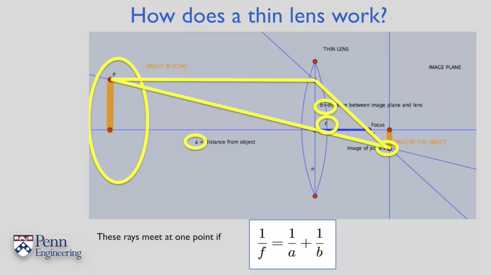
What happens when we move the image plane?
moving image plane = focusing (practically)
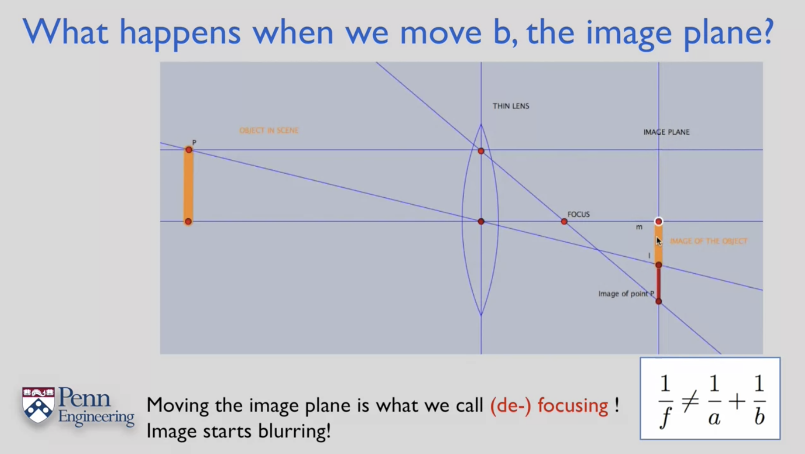
The read line segment is what makes image blur.
Perspective projection: size of object image
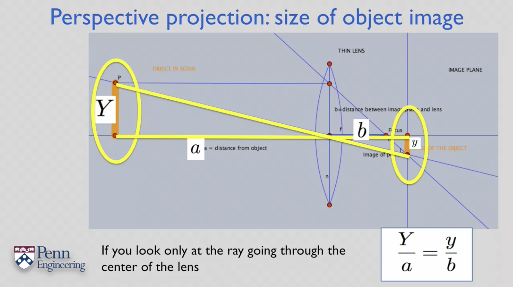
- This is easily proved by similarity of triangle.
- A point object of the same size coming closer results on a larger image.
- A point moving on the same ray does not change its image.
Single View Geometry
Two facts:
- When we take a pictuer, the 3D location has become a 2D plane. We have lost the third dimension in this process.
- It matters how are oritented to the world when we take a picture.
Ideas I: Measurements on planes
We can unwarp then measutre, which means to make parallel lines stay parallel and perpendicular angle stay perpendicular.
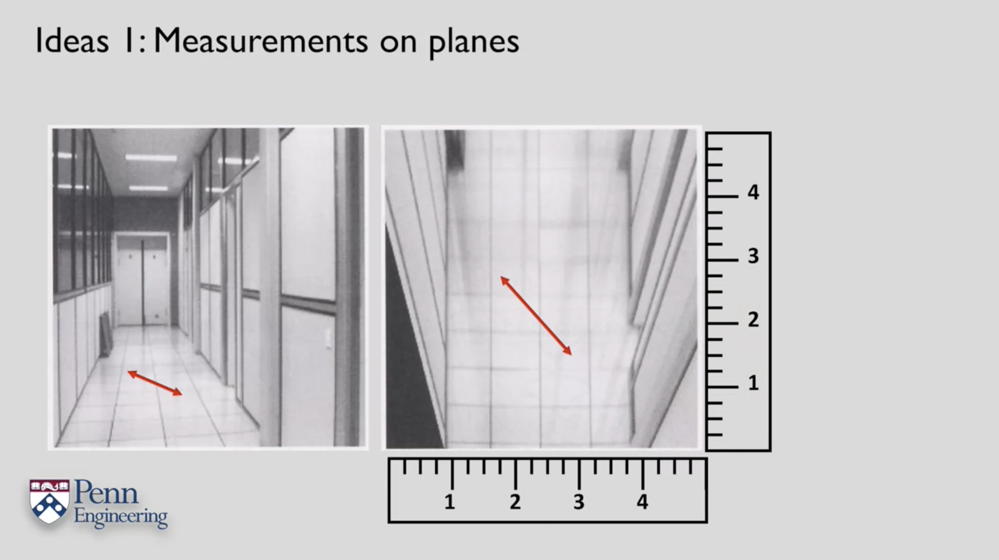
Ideas II: Vanishing points
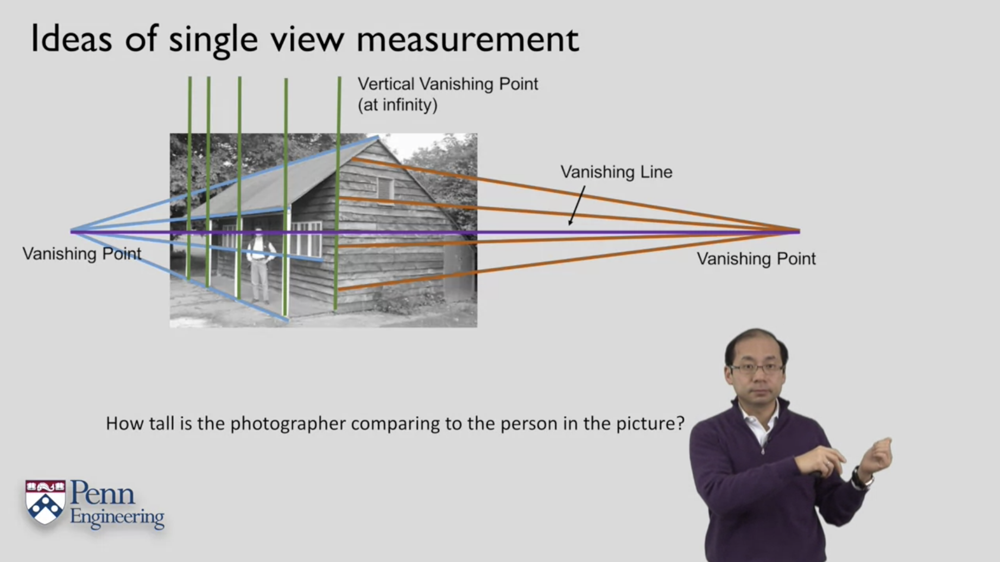
The roof and ground are parellel in real world (blue lines), and they converge to a point if we draw them. That’s the vanishing point.
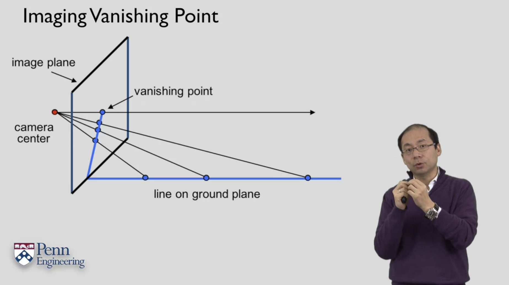
As the blue dot moves further away, the projection point on the image plane will be closer and closer to the vanishing point.
More on Perspective Projection
Bi-perspectograph
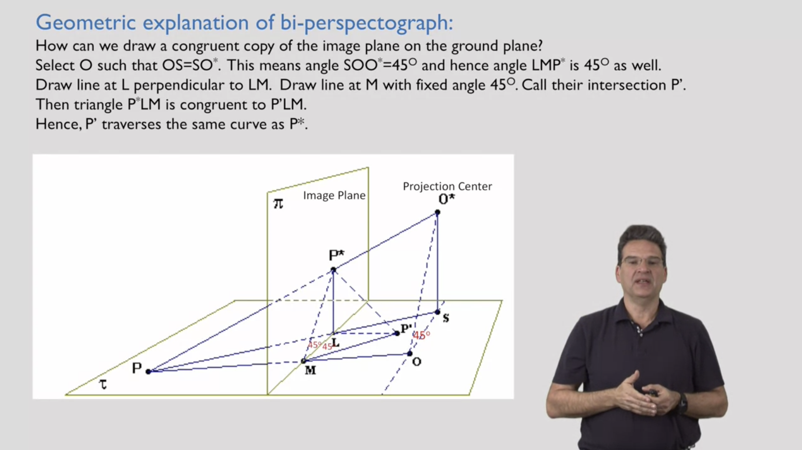
Take some time to understand this proof. As the point P* on image plane moves, we’re able to draw the projection curve on the ground plane with point P’.
Two parameters:
- Height of camera (line O*S)
- If we project a circle from image plane, the lower the camera is, the more squeezed is the ellipse.
- Distance of projection center from image plane (distance between two parallel lines LM and OS); also known as focal length
- When it moves, it only change the size not the shape.
Glimpse on Vanishing Points
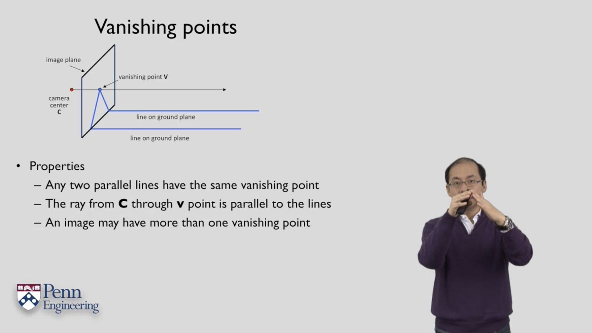
The three properties of vanishing points are on the image above.
Vanishing Lines
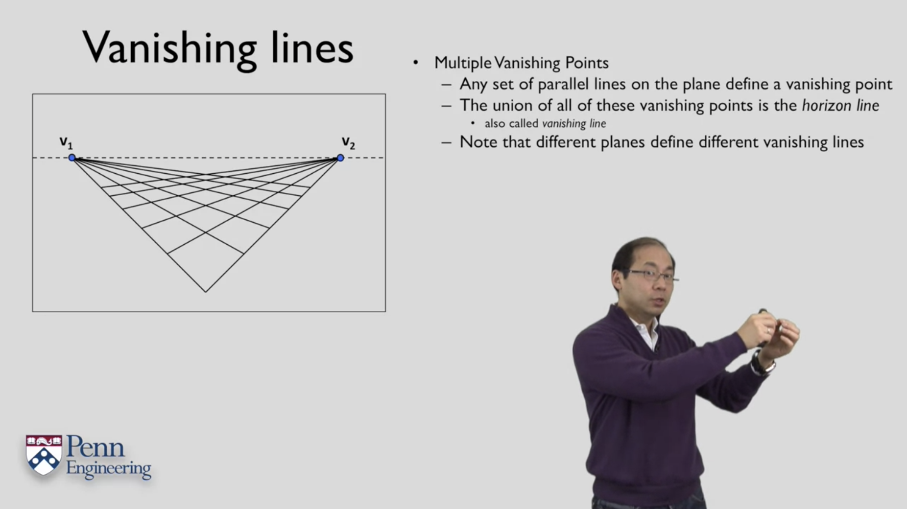
Horizon is a set of all directions to the infinity.
In other words, vanishing lines (horizon) is the intersection of image plane and the ground plane that is lifted up.
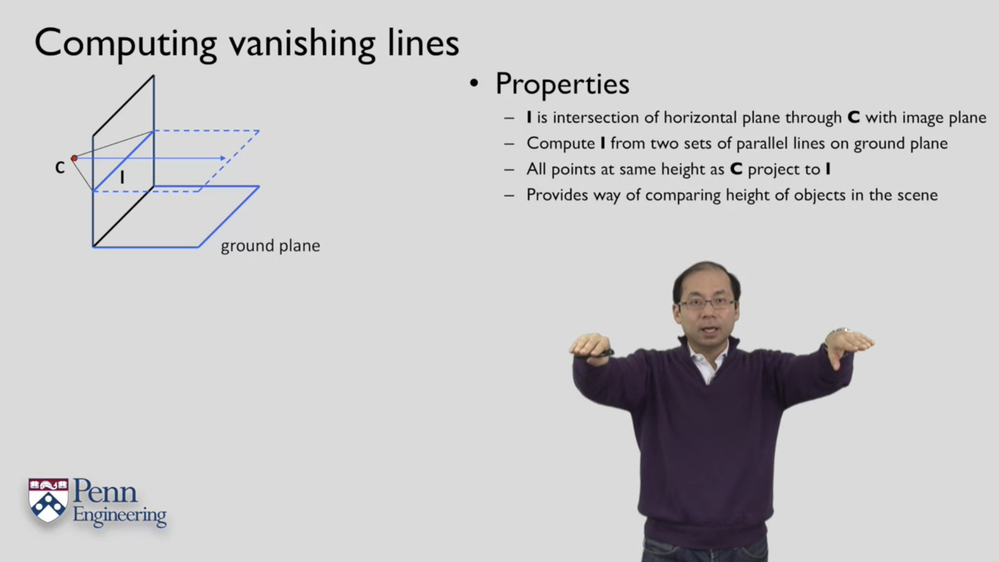
How to measure height?
If we draw a line of a walking person’s feet (ground plane), and lift up this line to the person’s head, these two lines are parellel in the third-person perspective. But in my perspective, these two lines will intersect to a vanishing point on horizon, which is the same height of camera.
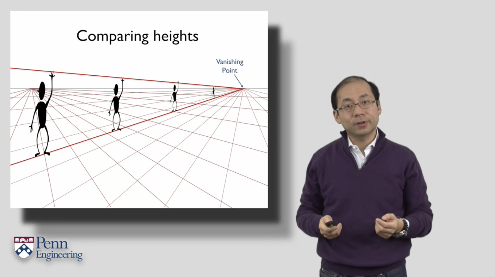
According to this rule, we need a referenc2e object with known length then we can measure the heights in the scene.
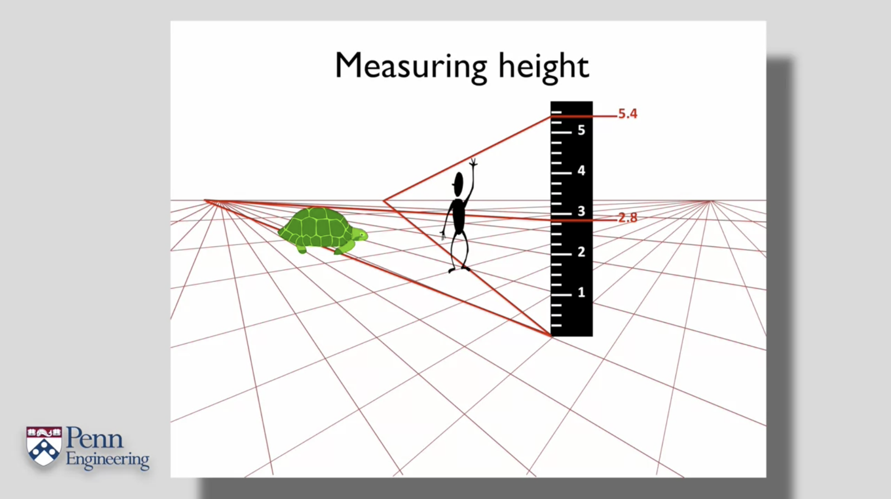
Connect the bottom of the object and the reference on the groud plane, it will intersect with horizon on a vanishing point. Then connect the vanishing point and the head of the object back to the reference. Now you have a ratio between object and reference so that you can measure the height.
Homogeneous Coordinates
Before we move on to next section, I think it’s neccesary to know what is homogeneous coordinates and why we use it. This part is from the course video but my understandings.
What is homogeneous coordinates?
It represents coordinates in 2 dimensions with a 3-vector.
- From euclidean to homogeneous
- add third coordinate as 1
(2,3)’ – (2,3,1)’ - add third coordinate as 0 to express infinity
(2,3)’ – (2,3,0)’
- add third coordinate as 1
- From homogeneous to euclidean
- divived by value of third coordinate
(4,5,1)’ – (4,5)
(8,6,3)’ – (8/3,6/3) - divived by 0 also proves that the point is in infinity
- divived by value of third coordinate
Why we use homogeneous coordinates?
- x = cx (x!=0)
e.g: (2,4,1)’ == (4,8,2) - it can represent point at infinity by the form (x,y,0)
Perspective Projection
How to represent a point?
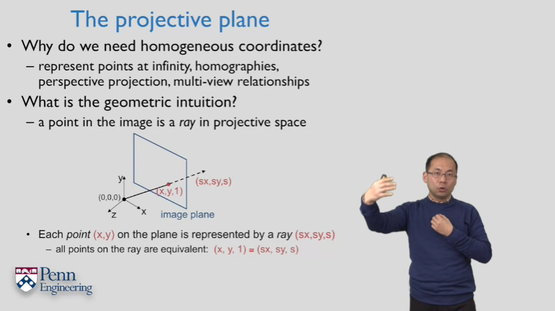
The point in the image plane can be considered as a ray pointing to infinity.
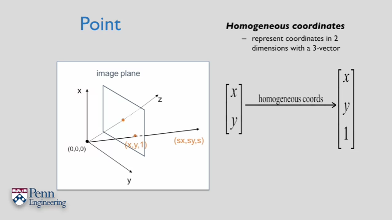
Since we consider a point on place as a ray going through the point and penetrating to the space, we can represent it as a vector using homogeneous coordinates.
How to represent a line?
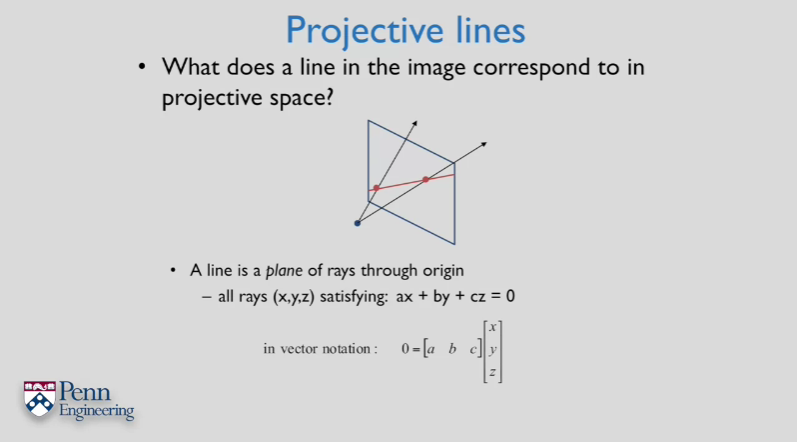
Important: a line is a plane of rays through origin.
(a,b,c) is a normal vector to the plane.
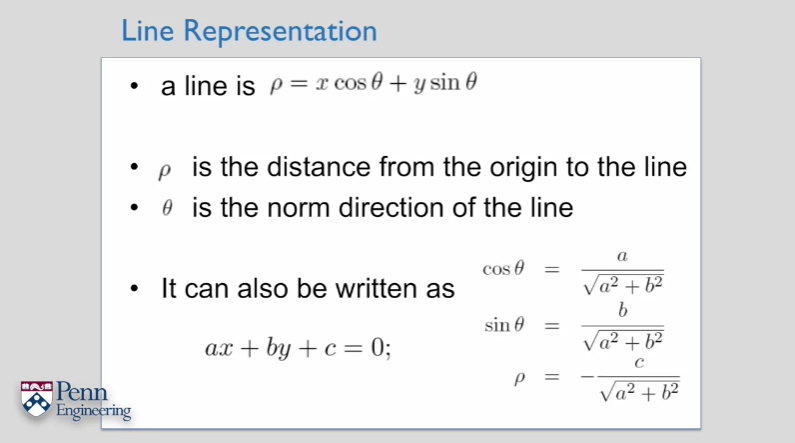
We can also represent the line with polar coordinate representation.
Line passing through two points
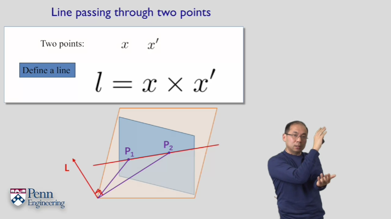
For every two points on the plane, there are two rays passing through them respectively from origin. It’s known that two lines define a plane, and sometimes we describe this plane by using it’s normal line.
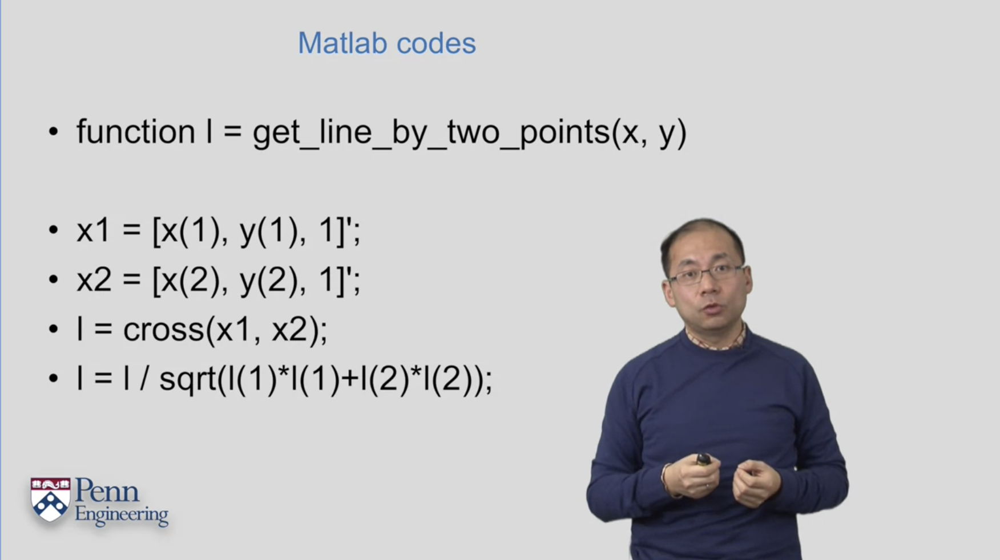
This is a sample MATLAB code to calculate the line.
function I = get_line_by_two_points(x,y)
x1 = [x(1), y(1), 1]';
x2 = [x(2), y(2), 1]';
I = cross(x1,x2);
I = I / sqrt(I(1)*I(1) + I(2)*I(2));
How to find the intersection of two lines?
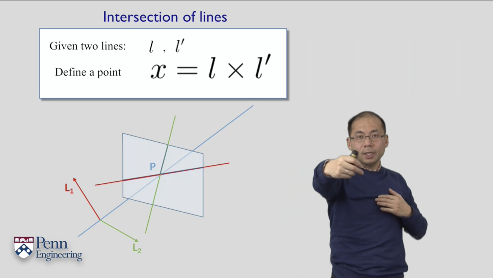
function x0 = get_point_by_two_line(I, II)
x0 = cross(I,II);
x0 = [x0(1)/x0(3); x0(2)/x0(3)];
Point-Line Duality
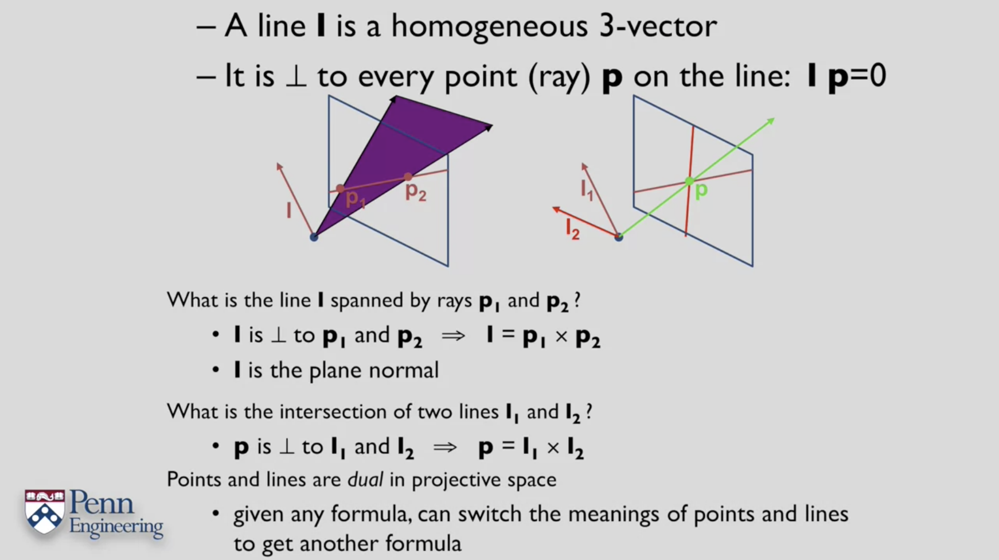
This slide is to realize the duality of point and line in projective space. If given any formula, we can switch the meanings of poitns and lines to get another formula.
Good to think: Now we know that take the cross product of two lines we get a point(ray) on the image plane, but what if the point we get has the form of (x,y,0). If we convert from 3D to 2D, either x or y divived by 0 we will get a point in infinity.
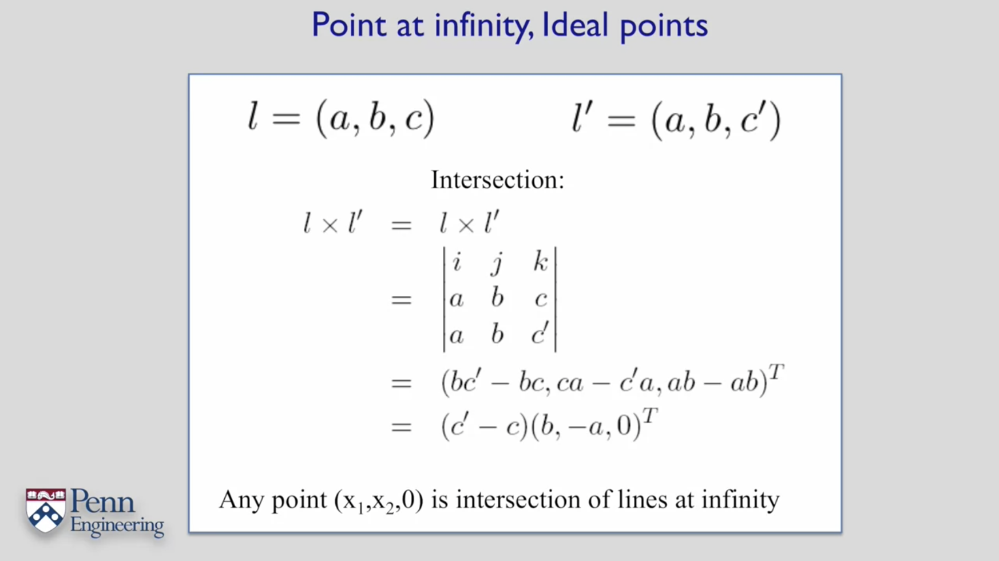
That’s the point at infinity, what is line at infinity. We have to find a line that every points with form (x,y,0) will pass through it. So, algebraically:
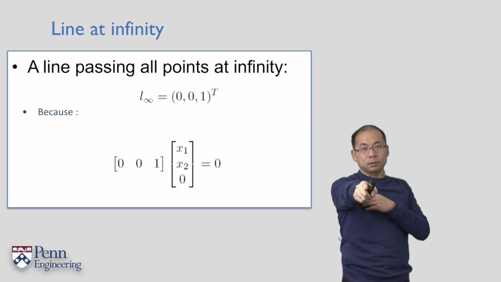
Ideal Points and Lines
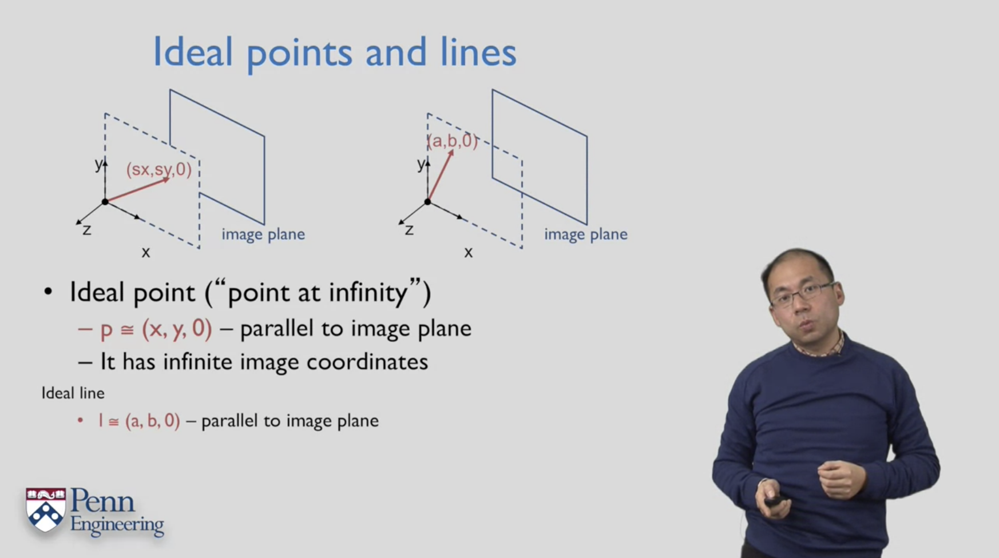
Rotations and Translations
Camera Coordinates & World Coordinates
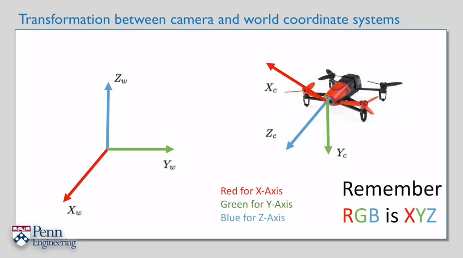
Convention: rgb to xyz
What is the geometric meaning of translation?
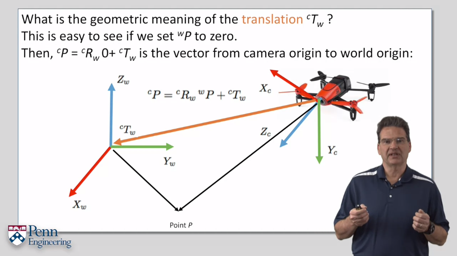
Mathematically, if the world coordinates of point P is (0,0,0), then the camera coordinates of point P is the vector from camera origin to world origin as shown on picture above.
What is the geometric meaning of rotation?
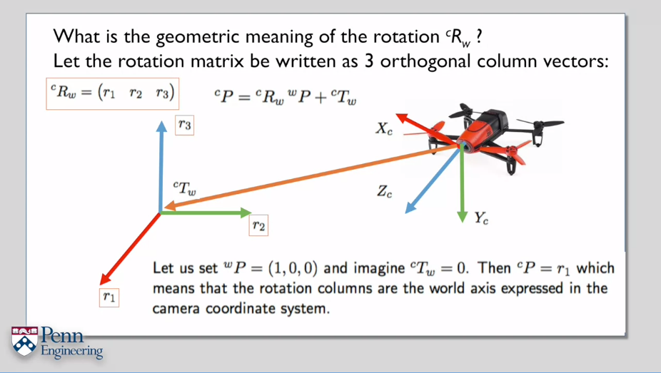
- r1 is the x-axis of the world with repect to the camera as red
- r2 is the y-axis of the world with repect to the camera as green
- r3 is the z-axis of the world with repect to the camera as blue
An example of how to read rotation matrix and tranlation vector
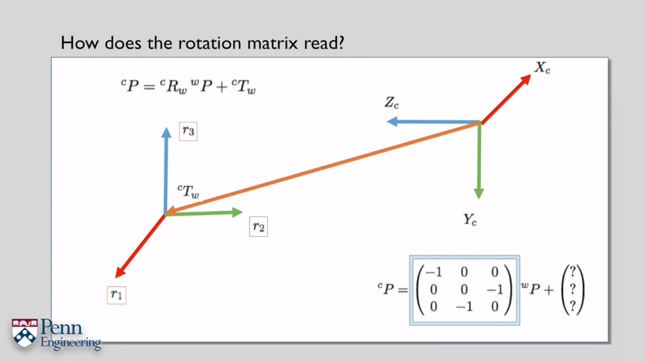
- x is parellel to r1 but opposite direction, so r1 is (-1,0,0)’
- y is parellel to r3 but opposite direction, so r2 is (0,0,-1)’
- z is parellel to r2 but opposite direction, so r3 is (0,-1,0)’
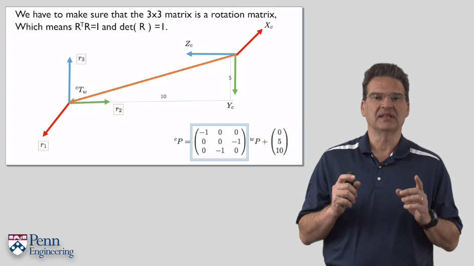
Reading translation is simply read the origin of world to origin of camera. In this case, origin goes toward y direction for 5, and z direction for 10.
Important: the vectors of rotation matrix have to be orthogonal to each other and determinant of rotation matrix has to equal one.
body coordinate system
What if we have one more more coordinate system which is the body coordinates?
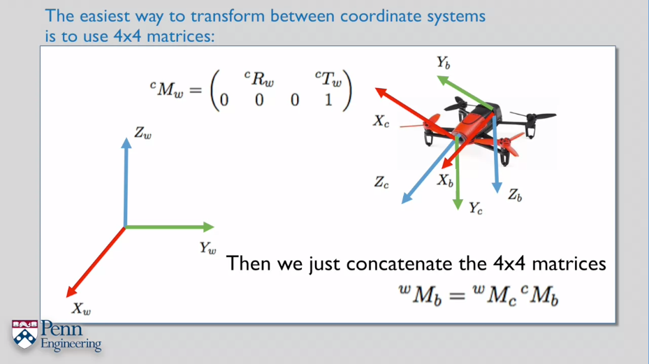
It will be the same idea of using rotation and translation, but we have a simpler expression which is to use a 4x4 matrix.
inverse transformation
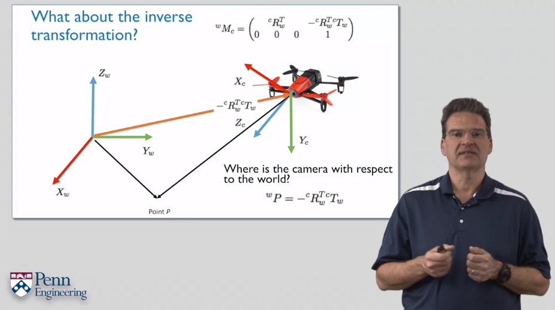
Since we know the translation is the vector from camera’s origin to world’s origin, then inverse transformation is from world’s origin back to camera’s origin when keeping the rotation unchanged.
Alternative way to find coordinates after transformation
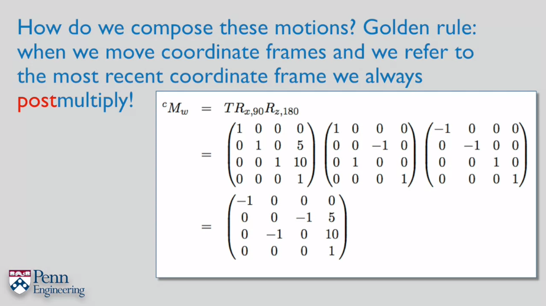
The approach previously is more intuition-based I think. If you prefer mathematical computation, the formula can be applied to find the coordinates after transformation. Remember to put translation in front of rotations.
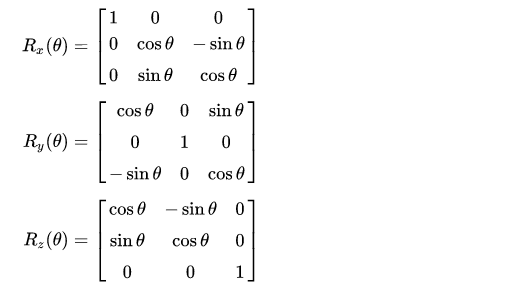
This is a picture I found from wikipedia if you’re not familiar with rotation with repect to a certain axis.
Pinhole Camera Model
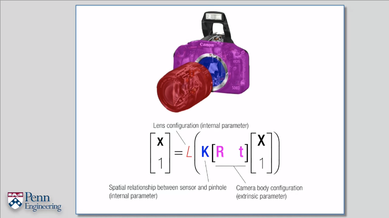
- Pink: camera body (camera oritentation and position in the world)
- Blue: sensor (transform optical measurement into pixel)
- Red: focal length
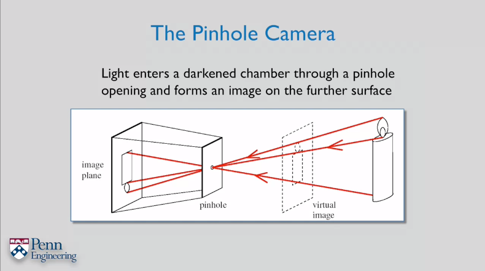
In daily life, the camera is not a canvas but a reverse canvas. The image plane is behind us rather than in front of us, but we can imagine there is a virtual image in front of us.
1st Person Camera World
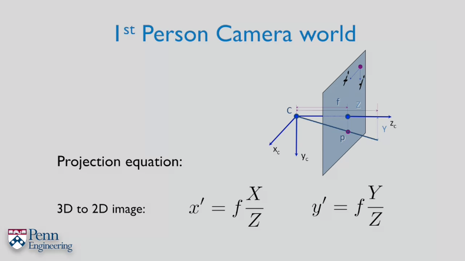
How to define is that x-axis is the horizontal line in front of you, and y-axis is a vertical line in front of you, then z-axis is pointing toward/from you due to right-hand rule.
The point c in the image in you, as the center of the universe (0,0,0), and there is a xy-plane in front of you. The item we see through the image plane can be shrinked to the image plane through the equations above.
Since the image plane is fixed-size. If I take image plane further out, away from object, then object image will be smaller.
At this point, it’s good to think about:
- Where is the center of projection?
- What is the focal length?
Let’s do a experiement
-
Draw a set of rediating line on a piece of paper.
-
Place your phone camera as the picture shown.
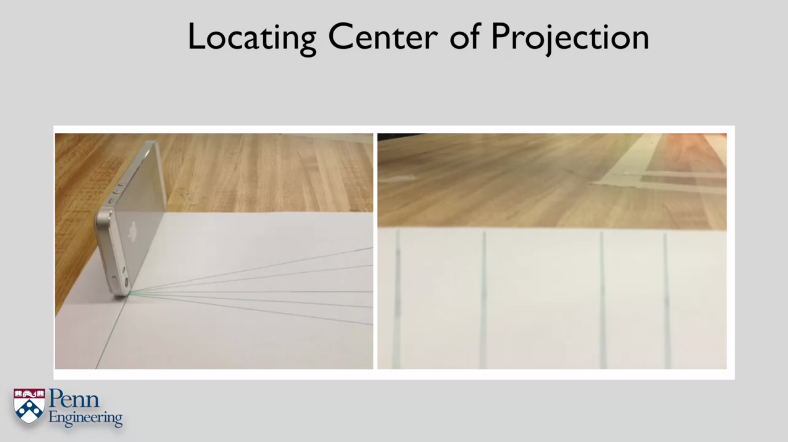 -
Look at the image in your camera, and move your camera back and forth until you see every line is parellel to each other.
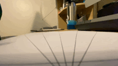
(from my iPhone) -
Draw a line to record the camera position.
This process can be illustrated in this diagram.
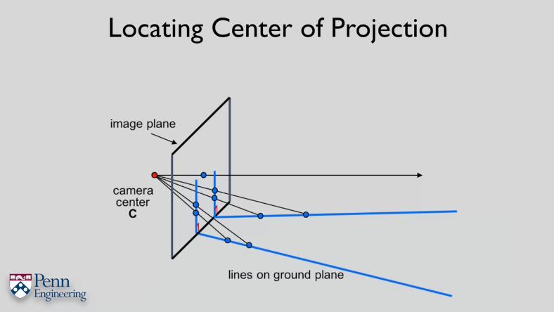